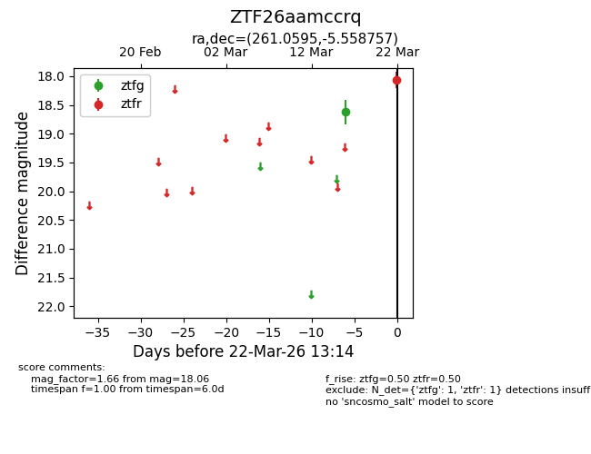
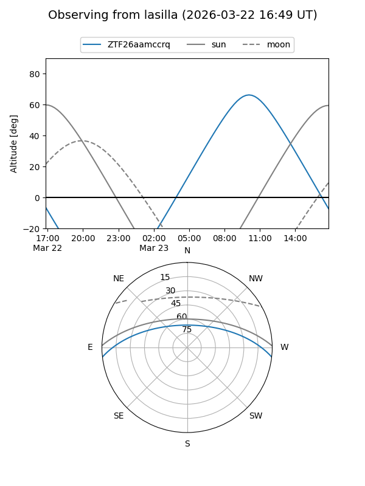
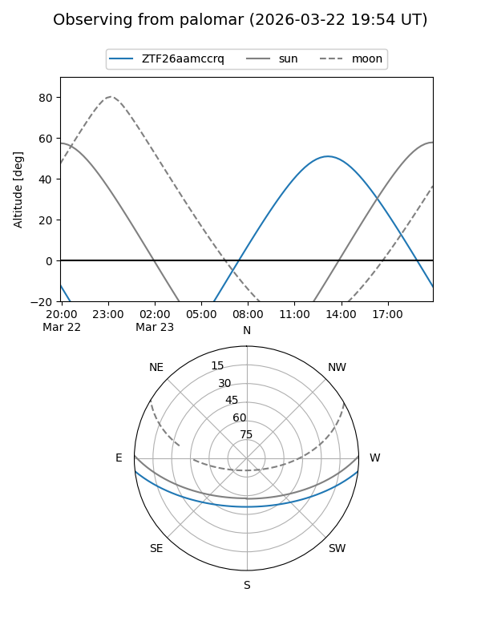

ZTF26aamccrq
Target ZTF26aamccrq at 2026-03-22 13:16
Aliases and brokers:
FINK: link
Lasair: link
ALeRCE: link
alt names
ZTF26aamccrq (ztf,fink_ztf)
Coordinates:
equatorial (ra, dec) = 261.0595,-5.55876
equatorial (HMS+DMS) = 17:24:14.27,-05:33:31.53
galactic (l, b) = (17.5200,+16.54625)
Flags:
Photometry:
last ztfg=18.62, ztfr=18.06
1 ztfg, 1 ztfr detections
Lightcurve

Visibility


Additional plots